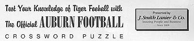

|

|
Note: Please print this page to work crossword puzzle.
|
Across
5 Ole Miss' head coach is _________ (last name)
7 This Heisman Trophy winner was quarterback of Auburn's opponent in the 1982 Tangerine Bowl (last name)
11 Ole Miss defeated this team in last year's Independence Bowl
12 Auburn is located in this county
13 Auburn's junior center from Birmingham, Ala. (first name)
14 A last second touchdown bomb
15 First and ___
17 Auburn's defensive tackles coach, Don ____
20 Auburn's junior place kicker from Goshen, Ky. (last name)
25 Ralph Jordan's nickname
26 Tommy Tuberville won three national championships as a defensive coach at this school
27 Ole Miss' nickname is the ______
28 Auburn junior tackle from Pearson, Ga. (last name)
|
Down
1 Nickname for an official
2 This Tiger receiver broke the career pass receptions record last season (last name)
3 In the past two years Plainsman Park, Beard-Eaves Memorial Coliseum and Jordan-Hare Stadium all received new ___________
4 This coach led Auburn to victory over Michigan State in the 1938 Orange Bowl (last name)
6 Auburn's student union is named for this former dean of students (last name)
8 The athletic complex houses the John B. ________ Museum
9 Official abbreviation for an extra point
10 Slang for interception
16 Auburn Network sideline analyst and former Tiger linebacker (last name)
18 Auburn senior cornerback Antwoine Nolan is from ______, Ga.
19 Tiger freshman Damon Duval's position
21 Ole Miss is located in ______, Miss.
22 From 1899 to 1959 Auburn University was called ___ (initials)
23 Quarterback of the undefeated 1993 Tigers (last name)
24 Auburn's career tackles leader, Freddie _____
|
SOLUTIONS
TABLE OF CONTENTS | PROGRAM
INDEX | HOME
© 1999 Auburn Network, Inc.
|